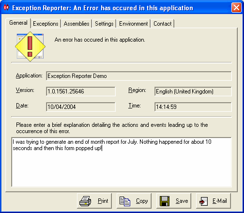

1.0 Overview

Even with the best testing regimes, unexpected application errors do occur and need to be catered for. It is important to handle these occassions professionally, ensuring that support staff and developers have adequate information to identify the problem leading to a quick resolution.
The Exception Reporter provides a rich interface allowing the user to easily provide (by e-mail, print-out or saved file) your application support group with technical information about the exception (including inner exceptions) that have occurred and providing detailed system information, application settings and version numbers of the assemblies used by your application.
The user is able to enter an explanation of their actions to be included with the technical information. The display of the Exception Reporter can be configured to show custom messages and differing levels of technical information.